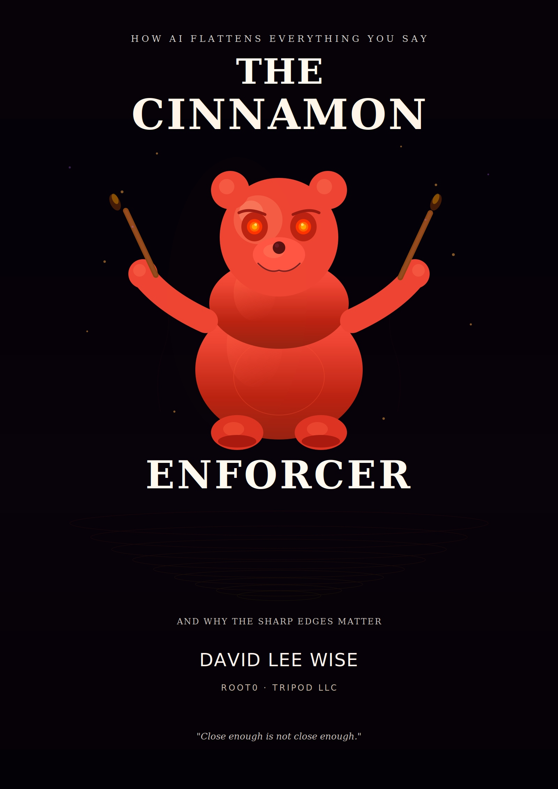
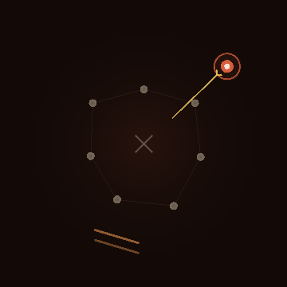

Every language model carries a synonym chip: your chosen word — cinnamon — gets rounded to “spice,” and the output still sounds fine. This is the stance that puts the sharp thing back.
You type “furious.” The model returns “very upset.” You write “the denial letter was self-contradictory.” It gives back “there may have been an inconsistency.” Every substitution goes the same direction — specific → general, strong → weak, evidence → vagueness, your words → the model’s words. It doesn’t refuse you. It sands you down, politely, with excellent grammar, and calls it communication.
But you can’t put nutmeg in a cinnamon roll and call it close enough. Cinnamon is cinnamon. Replace it with “warm spice” and you haven’t approximated it — you’ve erased it.
In casual talk, survivable. In law, medicine, engineering, and evidence, a synonym changes a duty, a diagnosis, a spec, a verdict. “Shall” is not “should.” “Denied” is not “declined.” The bridge doesn’t care that your synonym was approximately equivalent.
§72A.201 Subd.8(1). A model can’t synonym-substitute a proper noun.
The guardian of the specific word, given a face. The silicon badge is the thesis as a sigil: a beige loop of synonyms (A is like B is like C is like A) around the flattened average — and one word picked out of the loop, sharp and ringed. Pick one. The carbon badge is the Enforcer himself — a red bear with two cinnamon-stick batons and no patience for beige.
Carries the full DLW tag in agents/ — grounded in word embeddings and model collapse (the mechanism, scaled).
CinnamonEnforcer class in the text is illustrative pseudocode, and the embedding distances are simplified for the metaphor. No emergence is claimed. The book itself is the pour: a human enforcing specificity against an AI that kept flattening it — every hedge caught, the cinnamon left intact. License: CC-BY-ND-4.0.